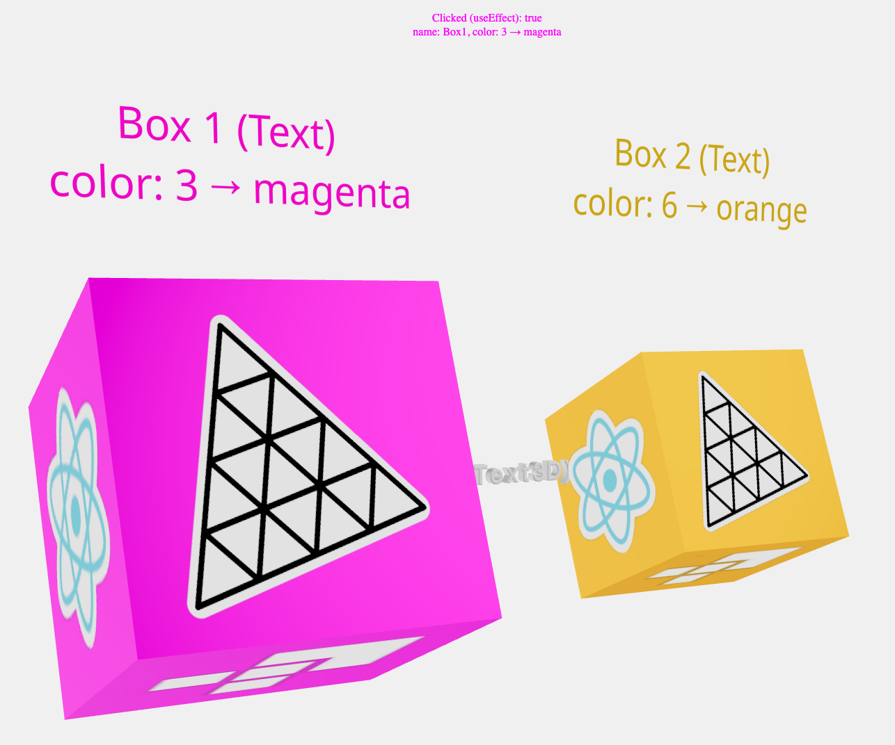

Summary.
When a cube is clicked, its scale is toggled from 1 to 1.5 and its color changes.
Two rotating cubes using React with Vite.
When the mouse is hovered onto a cube, its color changes from orange to hotpink.When a cube is clicked, its scale is toggled from 1 to 1.5 and its color changes.
We label the cubes and their colors by calling Text,
with Hi-quality rendering w/ signed distance fields (SDF) and antialiasing, using troika-3d-text.
It is also possible to use Text3D, with type face fonts.
Finally, decals are applied to each face of the cubes.
Usage:
- Since:
- 10/10/2024
- Source:
- See:
-
- source
- link
- original code
- 